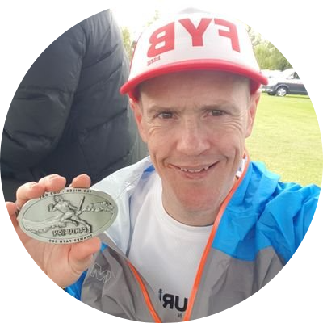

|

|
Alex Lee
Scrum Master for Sky
An adaptable Scum Master working within a high paced technology business helping development teams live agile principles and ensure processes are followed as agreed by the team. Responsible for the management of a development team dedicated to building internal applications that help others manage linear and non-linear content that is deployed to millions of Sky set to boxes around Europe. I am a keen runner who runs ultra marathons, a candidate for the Labour Party at the local government level, the Secretary for Labour Friends of the Forces (LFF) and a secondary school governor. When I have some free time I am also a husband to one and father to four.
|